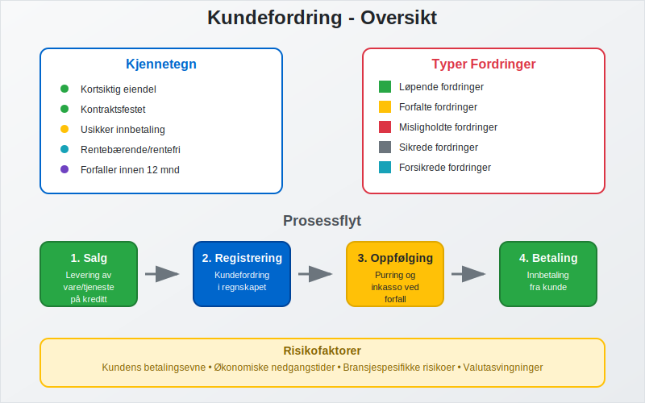
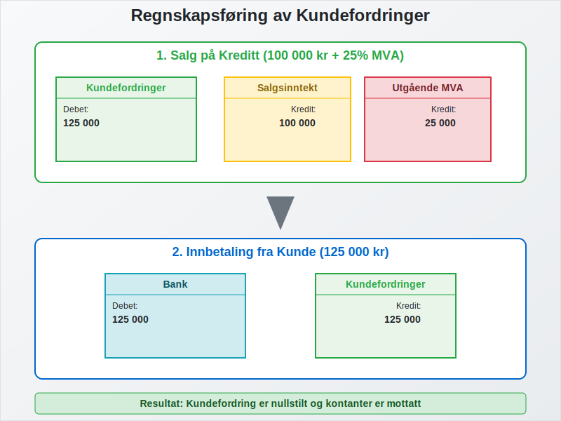
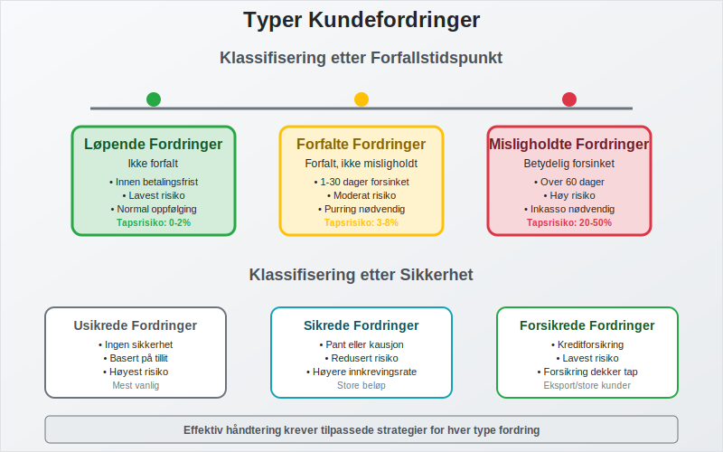
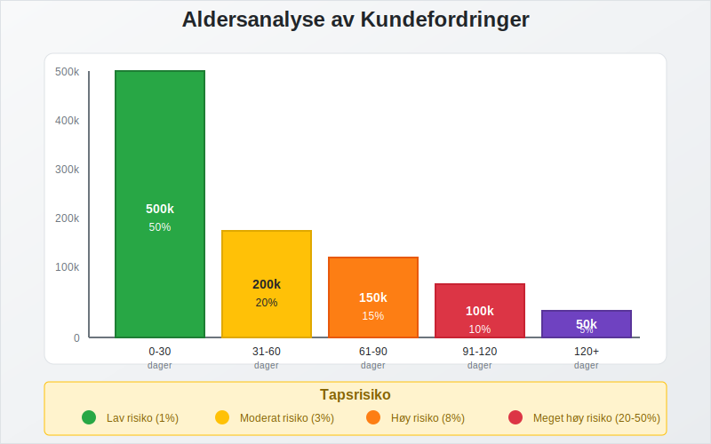
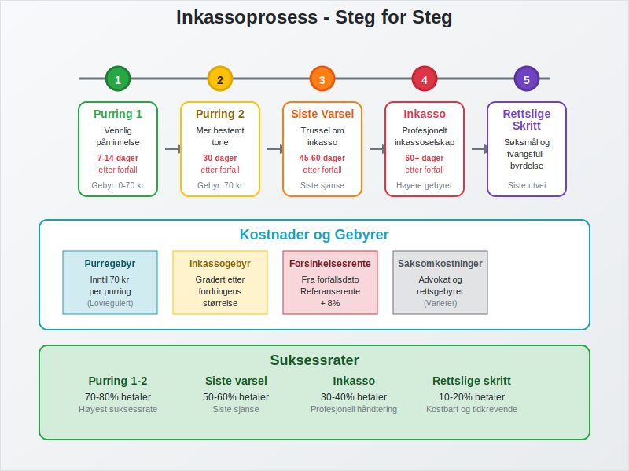
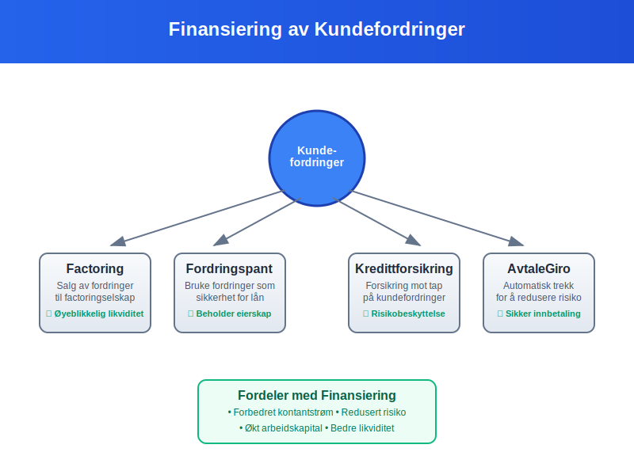
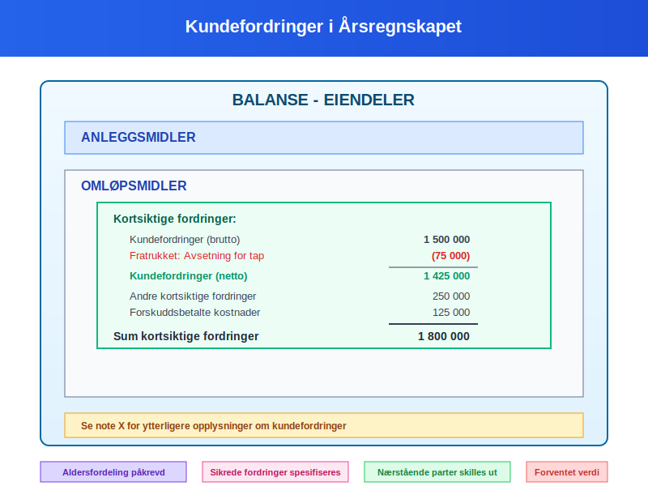
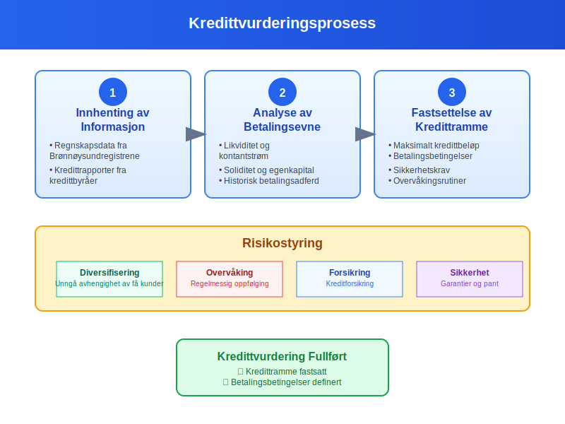
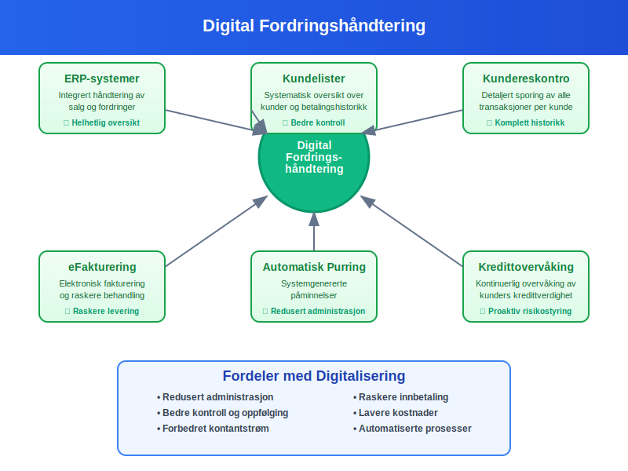
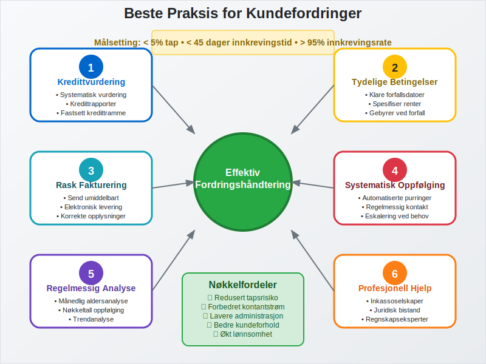

Kundefordring er penger som kunder skylder bedriften for varer eller tjenester som er levert, men som ennå ikke er betalt. Dette er en av de viktigste eiendelene i mange bedrifters balanse og representerer fremtidige kontantstrømmer som bedriften forventer å motta.
En fordring er et generelt krav på betaling som kan omfatte kundefordringer, leverandørfordringer og andre økonomiske krav. Se Hva er fordring?.
For spesifikk oppfølging av utestående beløp, les vår artikkel om Utestående Fordring.
Hva er Kundefordring?
Kundefordringer oppstår når bedriften selger varer eller tjenester på kreditt, det vil si at kunden får varene eller tjenestene først og betaler senere. Dette skaper en fordring som registreres som en eiendel i bedriftens regnskap.

Kjennetegn ved Kundefordringer:
- Kortsiktig eiendel: Vanligvis forfaller innen 12 måneder
- Kontraktsfestet: Basert på fakturaer og avtaler
- Usikker innbetaling: Risiko for at kunden ikke betaler
- Rentebærende eller rentefri: Avhenger av betalingsbetingelser
I B2B-handel er kundefordringer vanligvis større og har lengre betalingsbetingelser (30-90 dager) sammenlignet med B2C-handel hvor umiddelbare betalinger via kort, Vipps eller eFaktura reduserer kundefordringer betydelig, noe som krever mer omfattende kredittvurdering og oppfølging.
Regnskapsføring av Kundefordringer
Kundefordringer regnskapsføres etter prinsippet om opptjening, som betyr at inntekten og fordringen registreres når varen leveres eller tjenesten utføres.

Bokføringseksempel:
Ved salg på kreditt (100 000 kr + 25% MVA):
Debet: Kundefordringer 125 000
Kredit: Salgsinntekt 100 000
Kredit: Utgående MVA 25 000
Ved innbetaling fra kunde:
Debet: Bank 125 000
Kredit: Kundefordringer 125 000
Typer Kundefordringer
Kundefordringer kan klassifiseres på flere måter avhengig av deres natur og forfallstidspunkt.

Etter Forfallstidspunkt:
| Type | Beskrivelse | Eksempel |
|---|---|---|
| Løpende fordringer | Ikke forfalt | Faktura sendt for 10 dager siden, 30 dagers betalingsfrist |
| Forfalte fordringer | Forfalt, men ikke misligholdt | Faktura forfalt for 5 dager siden |
| Misligholdte fordringer | Betydelig forsinket betaling | Faktura forfalt for over 60 dager |
Etter Sikkerhet:
- Usikrede fordringer: Ingen sikkerhet for betaling
- Sikrede fordringer: Sikret med pant, kausjon, fantegang eller lignende. Se Fantegang.
- Forsikrede fordringer: Dekket av kreditforsikring
Aldersanalyse av Kundefordringer
Aldersanalyse er en viktig metode for å vurdere kvaliteten på kundefordringer og risikoen for tap.

Eksempel på Aldersanalyse:
| Aldersgruppe | Beløp (kr) | Andel (%) | Tapsrisiko (%) | Forventet tap (kr) |
|---|---|---|---|---|
| 0-30 dager | 500 000 | 50% | 1% | 5 000 |
| 31-60 dager | 200 000 | 20% | 3% | 6 000 |
| 61-90 dager | 150 000 | 15% | 8% | 12 000 |
| 91-120 dager | 100 000 | 10% | 20% | 20 000 |
| Over 120 dager | 50 000 | 5% | 50% | 25 000 |
| Totalt | 1 000 000 | 100% | 68 000 |
Tapsvurdering og Nedskrivning
Bedrifter må vurdere om kundefordringer kan inndrives fullt ut og eventuelt nedskrive fordringer som anses som tapte.
Indikatorer på Tap:
- Kundens økonomiske problemer
- Konkurs eller akkord
- Langvarig betalingsforsinkelse
- Manglende respons på purringer
- Betalingsanmerkning registrert mot kunden
- Juridiske tvister
Regnskapsføring av Tap:
Ved vurdering av sannsynlig tap:
Debet: Tap på kundefordringer 50 000
Kredit: Avsetning for tap 50 000
Ved endelig tap:
Debet: Avsetning for tap 50 000
Kredit: Kundefordringer 50 000
Inkasso og Inndriving
Når kundefordringer ikke betales til forfallstid, må bedriften iverksette tiltak for å få inn pengene.

Inkassoprosessen:
- Purring 1: Vennlig påminnelse etter 7-14 dager
- Purring 2: Mer bestemt tone etter 30 dager
- Siste varsel: Trussel om inkasso etter 45-60 dager
- Inkassoselskap: Overdragelse til profesjonelt inkassoselskap
- Rettslige skritt: Søksmål og tvangsfullbyrdelse
Inkassokostnader:
Inkassokostnader kan kreves dekket av skyldneren i henhold til inkassoloven:
- Purregebyr: Inntil 70 kr per purring
- Inkassogebyr: Gradert etter fordringens størrelse
- Renter: Forsinkelsesrente fra forfallsdato
Finansiering av Kundefordringer
Bedrifter kan bruke kundefordringer som grunnlag for finansiering for å forbedre kontantstrømmen.

Finansieringsalternativer:
- Factoring: Salg av fordringer til factoringselskap
- Fordringspant: Bruke fordringer som sikkerhet for lån
- Kredittforsikring: Forsikring mot tap på kundefordringer
- Avtalegiro: Automatisk trekk for å redusere risiko
Kundefordringer i Årsregnskapet
Kundefordringer må presenteres korrekt i årsregnskapet i henhold til norske regnskapsstandarder.

Presentasjon i Balansen:
- Omløpsmidler: Under kortsiktige fordringer
- Brutto beløp: Totale kundefordringer
- Avsetning for tap: Trekkes fra som negativ post
- Netto beløp: Forventet innbetalingsverdi
Noteopplysninger:
Årsregnskapet må inneholde tilleggsopplysninger om:
- Aldersfordeling av kundefordringer
- Avsetninger for tap og endringer i disse
- Sikrede fordringer
- Fordringer på nærstående parter
Nøkkeltall for Kundefordringer
Flere nøkkeltall brukes for å analysere effektiviteten i håndteringen av kundefordringer.
Viktige Nøkkeltall:
| Nøkkeltall | Formel | Hva det viser |
|---|---|---|
| Omløpshastighet | Kreditsalg ÷ Gjennomsnittlige kundefordringer | Hvor raskt fordringer inndrives |
| Innkrevingsperiode | 365 ÷ Omløpshastighet | Gjennomsnittlig innkrevingstid i dager |
| Tapsandel | Tap på fordringer ÷ Totale kreditsalg | Andel av salget som tapes |
Eksempel på Beregning:
Gitt:
- Kreditsalg: 10 000 000 kr
- Gjennomsnittlige kundefordringer: 1 500 000 kr
- Tap på fordringer: 100 000 kr
Beregninger:
- Omløpshastighet: 10 000 000 ÷ 1 500 000 = 6,67 ganger
- Innkrevingsperiode: 365 ÷ 6,67 = 55 dager
- Tapsandel: 100 000 ÷ 10 000 000 = 1%
Kredittvurdering og Risikostyring
For å minimere risikoen for tap må bedrifter ha gode rutiner for kredittvurdering av nye kunder.

Kredittvurderingsprosess:
-
Innhenting av informasjon:
- Regnskapsdata fra Brønnøysundregistrene
- Kredittrapporter fra kredittbyråer
- Referanser fra andre leverandører
-
Analyse av betalingsevne:
- Likviditet
- Soliditet og egenkapital
- Historisk betalingsadferd
-
Fastsettelse av kredittramme:
- Maksimalt kredittbeløp
- Betalingsbetingelser
- Sikkerhetskrav
Risikostyring:
- Diversifisering: Unngå for stor avhengighet av få kunder
- Overvåking: Regelmessig oppfølging av kunders betalingsadferd gjennom kundelister
- Forsikring: Kreditforsikring for store eksponeringer
- Sikkerhet: Krav om garantier eller pant ved høy risiko
Digitalisering og Moderne Fordringshåndtering
Moderne teknologi har revolusjonert måten bedrifter håndterer kundefordringer på.

Digitale Løsninger:
- ERP-systemer: Integrert håndtering av salg og fordringer
- Kundereskontro: Detaljert sporing av alle transaksjoner per kunde
- Kundelister: Systematisk oversikt over alle kunder og deres betalingshistorikk
- Elektronisk fakturering: Raskere levering og behandling
- Automatisk purring: Systemgenererte påminnelser
- Kredittovervåking: Kontinuerlig overvåking av kunders kredittverdighet
Fordeler med Digitalisering:
- Redusert administrasjon
- Raskere innbetaling
- Bedre kontroll og oppfølging
- Lavere kostnader
- Forbedret kontantstrøm
Internasjonale Kundefordringer
For bedrifter som selger til utlandet, kommer det tilleggskompleksitet i håndteringen av kundefordringer.
Særlige Utfordringer:
- Valutarisiko: Svingninger i valutakurser
- Lengre innkrevingstid: Kompliserte betalingssystemer
- Juridiske forskjeller: Ulike lover og regler
- Kulturelle forskjeller: Ulike betalingstradisjoner
Risikohåndtering:
- Valutasikring: Terminkontrakter eller opsjoner
- Eksportkredittforsikring: Spesiell forsikring for eksport
- Remburs: Bankgaranti for betaling
- Forskuddsbetaling: Betaling før levering
Beste Praksis for Kundefordringer
For å optimalisere håndteringen av kundefordringer bør bedrifter følge etablerte beste praksis.

Anbefalinger:
- Etabler klare kredittrutiner: Systematisk kredittvurdering av alle nye kunder
- Tydelige betalingsbetingelser: Spesifiser forfallsdato, renter og gebyrer
- Rask fakturering: Send fakturaer umiddelbart etter levering
- Systematisk oppfølging: Automatiserte purre- og inkassoprosesser
- Regelmessig analyse: Månedlig gjennomgang av aldersanalyse og nøkkeltall
- Profesjonell hjelp: Bruk inkassoselskaper ved behov
Sammenheng med Andre Regnskapsbegreper
Kundefordringer henger sammen med flere andre viktige regnskapsbegreper som er essensielle for å forstå det totale bildet.
Relaterte Begreper:
- Debitor: Person eller selskap som skylder penger
- Leverandørgjeld: Motsatsen av kundefordringer
- Arbeidskapital: Inkluderer kundefordringer som viktig komponent
- Kontantstrøm: Påvirkes direkte av innkrevingstid
For aksjeselskaper er effektiv håndtering av kundefordringer kritisk for å opprettholde god likviditet og lønnsomhet.
Konklusjon
Kundefordringer er en kritisk komponent i de fleste bedrifters finansielle struktur. Effektiv håndtering av kundefordringer krever systematiske prosesser for kredittvurdering, fakturering, oppfølging og innkreving. Ved å implementere beste praksis og bruke moderne digitale verktøy kan bedrifter minimere risikoen for tap, forbedre kontantstrømmen og optimalisere arbeidskapitalen.
Korrekt regnskapsføring og presentasjon av kundefordringer er ikke bare et lovkrav, men også et viktig verktøy for ledelsen til å ta informerte beslutninger om kredittgivning, risikostyring og finansiell planlegging.